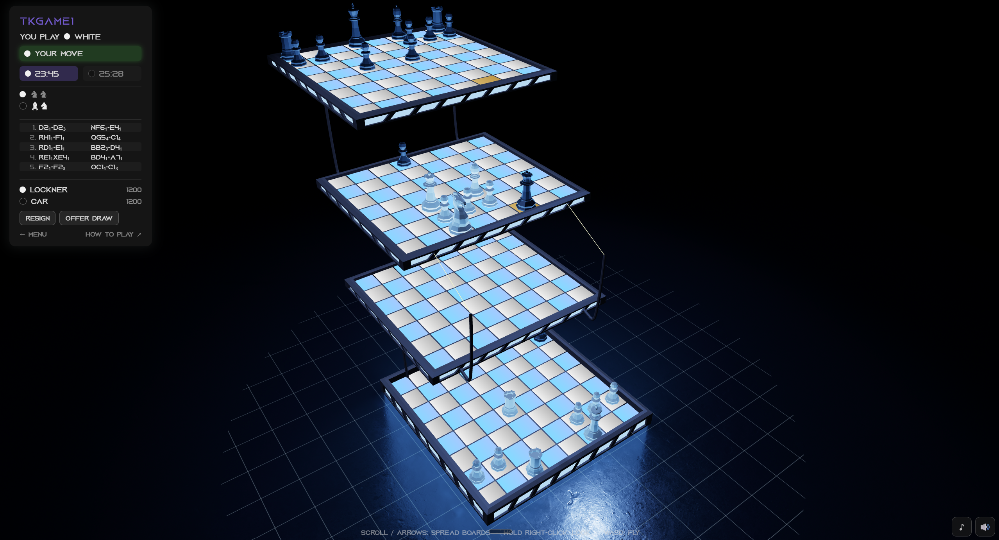
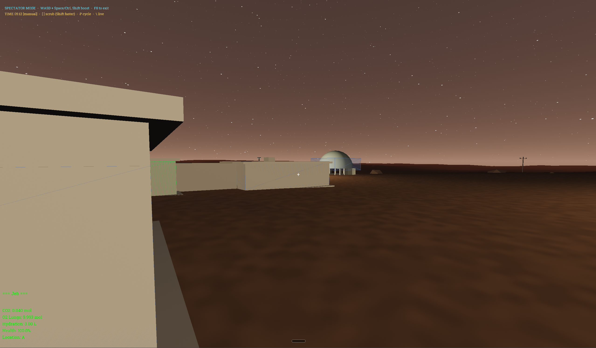

Featured / Mission simulation
SatelliteSim.jl / ss.jl
From the launchpad to lunar flight and reentry. Explore satellite missions and the physics behind them in an interactive browser demo, backed by a Julia simulation.
Bend dimensions. Build a Mars outpost. Take the long way around the Moon. Experiments you can play in your browser.
From the launchpad to lunar flight and reentry. Explore satellite missions and the physics behind them in an interactive browser demo, backed by a Julia simulation.

Navigate 3D slices of a four-dimensional world. Rotate the fourth axis to reveal a different path.

A familiar game with another dimension. Think beyond the board: pieces move through 3D space.

Run an early Mars outpost. Balance life support, power, resources, and the operations that keep a base alive.
Explore gravity in three dimensions. See how an extra axis changes the shape of an orbit.
A gravity playground on a single plane. Experiment with motion and find your way through the stars.